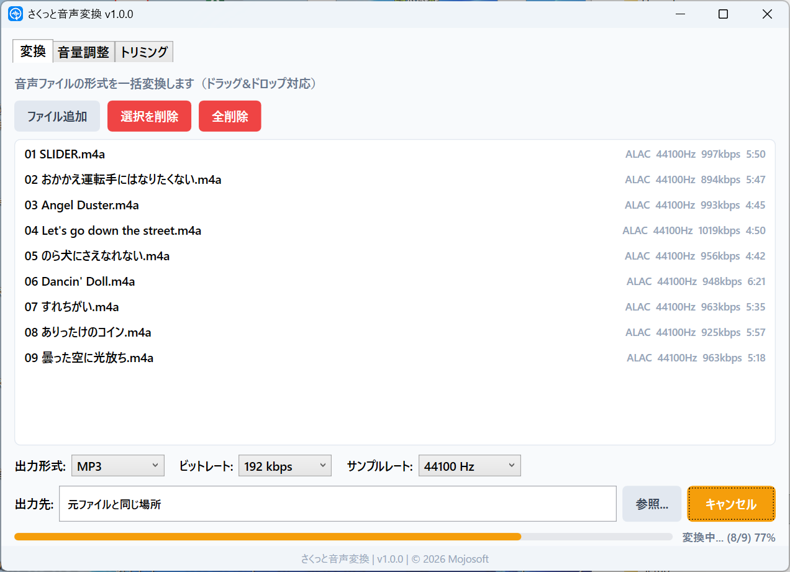
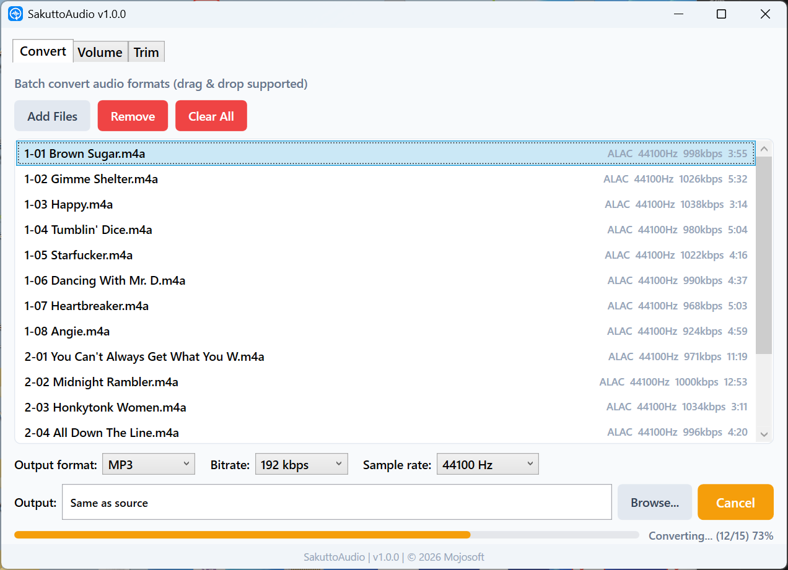
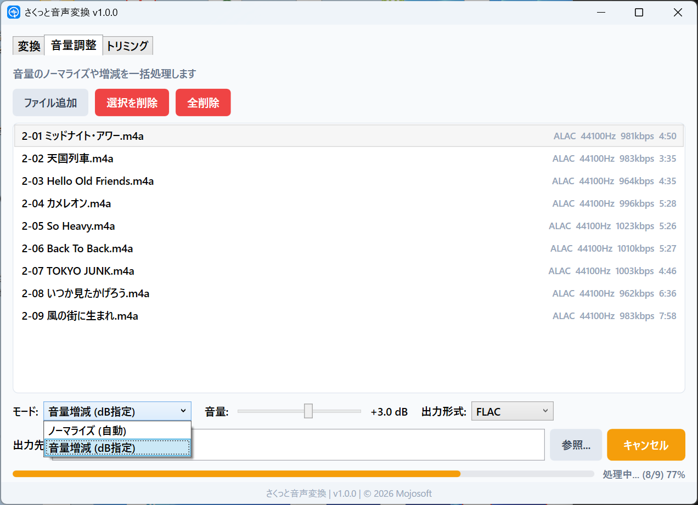
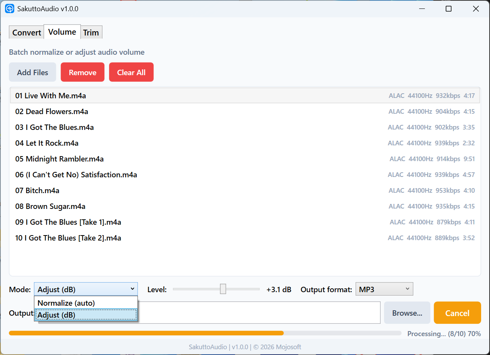
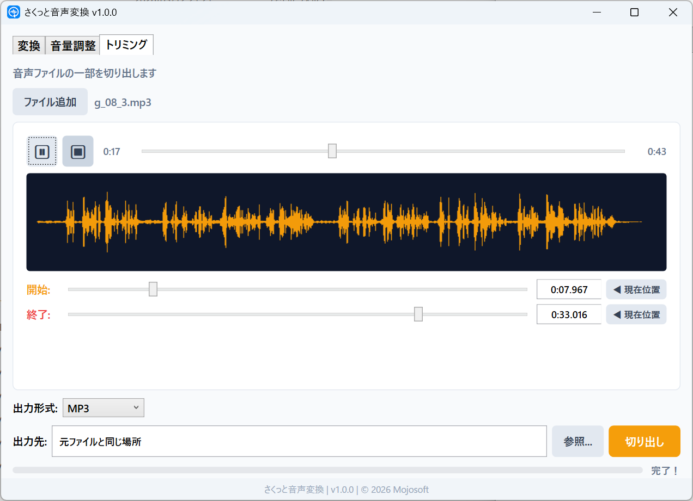
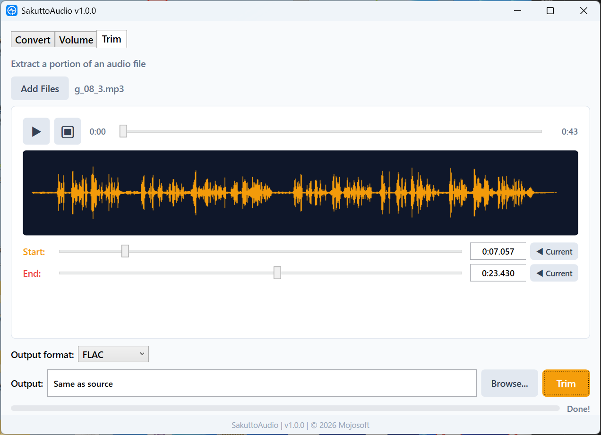

フォーマット変換・音量調整・トリミング
3つの機能をシンプルなひとつのアプリに。
Convert, Adjust Volume & Trim
3 essential features in one simple app.
音声の変換・編集がこのアプリひとつで完結します。One app covers all the audio tasks you need.
MP3・WAV・FLAC・AAC・OGGなど主要な音声形式に一括変換。複数ファイルをまとめて処理。Batch convert to MP3, WAV, FLAC, AAC, OGG, and more. Process multiple files at once.
バラバラな音量を自動で最適化、またはdB単位で微調整。複数ファイルの一括処理に対応。Auto-normalize uneven volumes, or fine-tune by dB. Batch processing supported.
波形を見ながらスライダーで直感的に開始・終了を指定。必要な部分だけ切り出し。View the waveform and set start/end with sliders. Extract just the part you need.
実際のアプリの画面をご覧ください。See the app in action.


複数の音声ファイルをドラッグ＆ドロップで追加し、MP3・WAV・FLAC・AAC・OGGに一括変換。ビットレートやサンプルレートも設定可能。Add multiple audio files via drag & drop, then batch convert to MP3, WAV, FLAC, AAC, or OGG. Configure bitrate and sample rate.


ノーマライズで音量を自動最適化、またはdBスライダーで手動調整。複数ファイルを一括処理。Auto-normalize volume levels, or manually adjust with a dB slider. Process multiple files in one batch.


波形表示を見ながらスライダーで開始・終了位置を指定。再生中に「現在位置」ボタンで一発セット。必要な部分だけサクッと切り出し。View the waveform and use sliders to set start/end positions. Use the "current position" button during playback for one-tap positioning.
日常の音声作業を、もっとシンプルに。Make your daily audio tasks simpler.
インストールしたらすぐ起動。アカウント登録もログインも不要です。Launch right after install. No account signup or login required.
MP3・WAV・FLAC・AAC・OGG・WMA・M4A・OPUS。主要な音声形式をすべてカバー。MP3, WAV, FLAC, AAC, OGG, WMA, M4A, OPUS. All common audio formats covered.
OSの言語設定に合わせて自動で切り替わります。Automatically switches based on your OS language setting.
すべての処理はPC上で完結。ファイルが外部に送信されることはありません。All processing stays on your PC. Your files are never sent to any server.
月額課金なし。一度購入すればずっと使えます。No subscription fees. Buy once, use forever.
FFmpegベースの高速エンコード。プログレスバーで進捗をリアルタイム確認。FFmpeg-based high-speed encoding. Real-time progress bar included.
音声変換がこんなにラクになります。Audio conversion has never been this easy.
変換・音量調整・トリミングから、やりたい操作をクリック。Click the tab for the operation you want: convert, volume, or trim.
音声ファイルをドラッグ＆ドロップ、またはボタンで選択。Drag & drop audio files, or select them with the file picker.
ボタンをクリックするだけ。処理結果はすぐに保存されます。Click the button and you're done. Results are saved instantly.
お困りの際はお気軽にお問い合わせください。Feel free to contact us if you need help.
不具合の報告・機能のリクエストBug Reports & Feature Requests
GitHub Issues からご報告いただけます。
Report via GitHub Issues.
お問い合わせContact
Email: support@mojosoft.biz